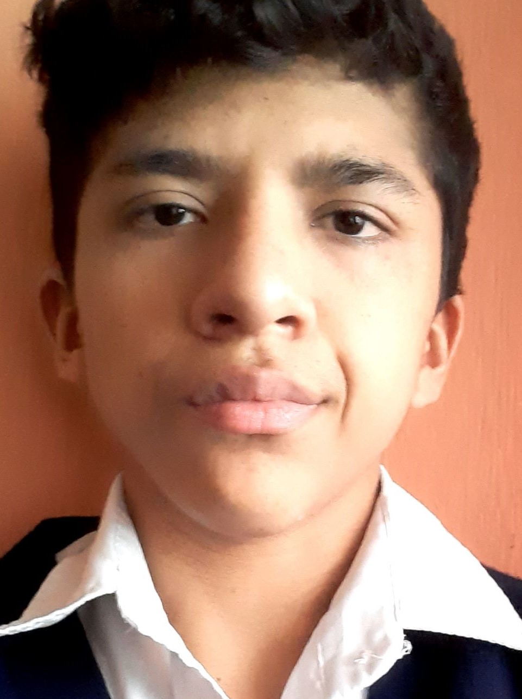
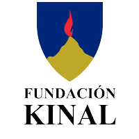

Josue Alvarado
Estudiante
Josue Daniel Alvarado Cabrera nació el 13 de octubre de 2003 en Guatemala, actualmente tiene 18 años de edad, de padre y madre llamados Baldomero e Iris respectivamente, Josue estudió toda su primaria en la Escuela 25 de Septiembre donde estuvo la mitad del tiempo con honores logrando graduarse, luego pasó al Instituto Federico Mora donde cursó todos los estudios basicos y actualmente está estuiando en Kinal donde está en el ultimo año de la carrera.

En mi ultimo año como estudiante de Kinal obviamente mi meta es graduarme con buenas notas, como mi proximo objetivo es la universidad me gustaria llevarme los conocimientos necesarios para pasar los examenes de admisión, no entra en mis planes seguir con la carrera de sistemas pero aún así me gustaria aprender lo suficiente como para poder trabajar en algo relacionado.